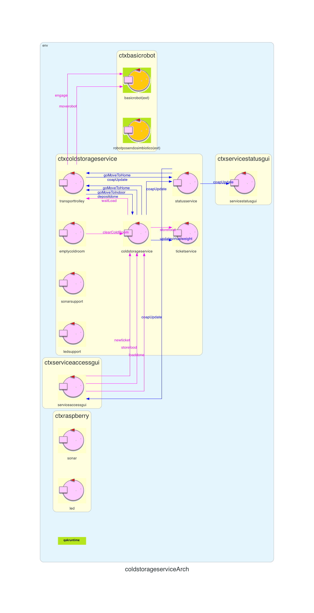
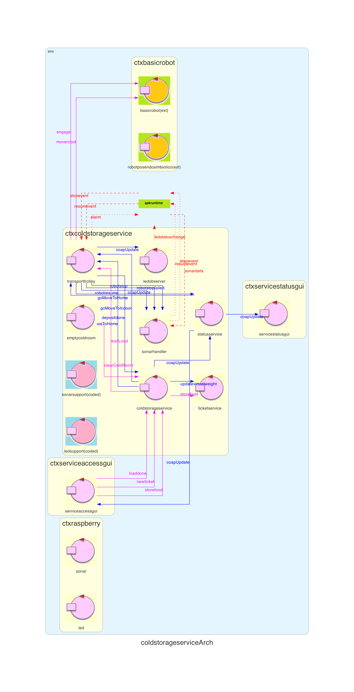
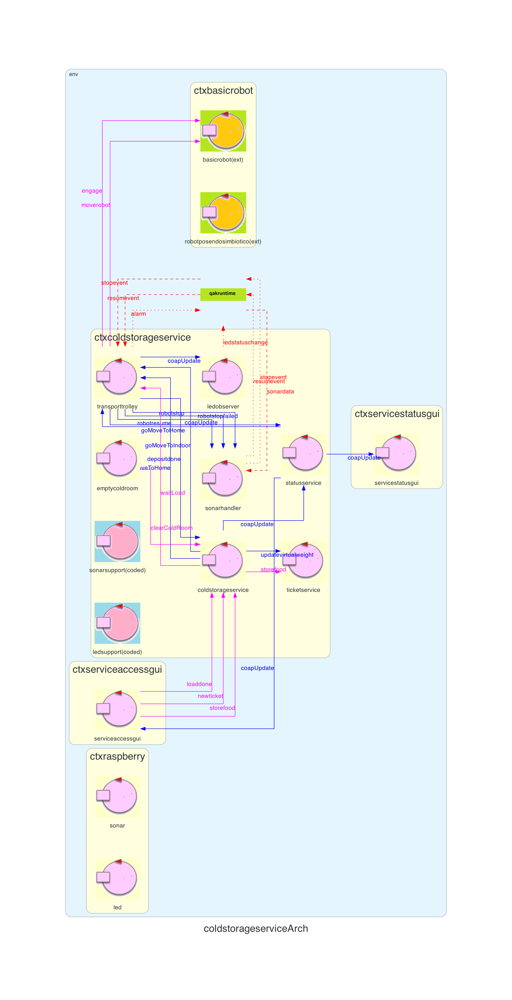

Introduction
Lo Sprint2 ha prodotto la seguente architettura:

Requirements
The system includes a a Sonar and a Led connected to a RaspnerryPi.
The Sonar is used as an ‘alarm device’: when it measures a distance less that a prefixed value DLIMT, the transport trolley must be stopped; it will be resumed when Sonar detects again a distance higher than DLIMT.
The Led is used as a warning devices, according to the following scheme:
Goal di questo sprint:
- the Led is off when the transport trolley is at HOME
- the Led blinks while the transport trolley is moving
- the Led is on when transport trolley is stopped.
- While the transport trolley is moving, the Alarm requirements should be satisfied. However, the transport trolley should not be stopped if some prefixed amount of time (MINT msecs) is not passed from the previous stop.
Goal di questo sprint:
- realizzazione degli Alarm Requirements (componenti Sonar e Led)
Requirement analysis
Dall'analisi dei requisiti si evince che:
- DLIMT è rappresentato con un valore intero positivo
- Il led deve lampeggiare durante tutta la durata della deposit action
- Il led sarà attivo nel caso in cui il robot venga fermato dal sonar (il quale ha rilevato una distanza minore di DLIMT) o nel caso in cui ci sia una collisione
- MINT è un valore intero positivo che rappresenta il tempo minimo che deve intercorrere tra due allarmi emessi dal sonar (Alarm Condition)
- home, il robot si trova fermo in home (coordinate (0,0))
- moving, il robot è in movimento e sta eseguendo una deposit action
- stopped, il robot è stato fermato dal sonar o ha avuto una collisione
Analisi del Problema
Led e sonar fisici
Su un RaspberryPi sono collegati un sonar e un led fisici e che vengono utilizzati rispettivamente come alarm e warning devices.LedSupport
Questo attore si occupa di gestire il led fisico. Utilizza le informazioni sui cambiamenti di stato del transporttrolley (home, moving, stopped) per accedere/spegnere il led fisico.SonarSupport
Questo attore si occupa di gestire il sonar fisico. Riceve da quest'ultimo le misure rilevate che vengono utilizzate per inviare un'apposita informazione che indica se è stata letta una distanza minore o maggiore di DLIMT.Architettura logica

Dall'architettua logica possiamo evidenziare i seguenti componenti:
Dall'architettua logica possiamo evidenziare i seguenti componenti:
- ColdStorageService: riceve dal fridge truck le richieste di verifica di validità dei ticket che vengono successivamente inoltrate al TicketService, riceve le richieste di svuotamento dall'EmptyColdRoom e invia i messaggi al TransportTrolley per iniziare la deposit action
- TransportTrolley: invia al BasicRobot i messaggi necessari per eseguire la deposit action
- TicketService: si occupa di gestire le richieste per l'emissione di nuovi ticket e di verificarne la validità nel momento in cui viene presentato dal fridge truck
- EmptyColdRoom: si occupa di svuotare periodicamente la coldroom inviando un apposito messaggio al ColdStorageService
- Serviceaccessgui: è la gui utilizzata dal truck per richiedere l'emissione di nuovi ticket e per richiedere un'operazione di deposito
- Servicestatusgui: è la gui utilizzata dal Service-manager per tenere traccia dello stato del servizio
- Statusservice: si occupa di inivare i dati aggiornati alle gui
- BasicRobot: esegue i comandi ricevuti dal TransportTrolley
- Robotposendosimbiotico: utilizzato per ottenere aggiornamenti riguardanti la mappa e la posizione del robot
- Sonar: componente fisico situato su RaspberryPi che si occupa di rilevare distanze ed utilizzato come alarm device
- Led: componente fisico situato su RaspberryPi usato come warning device
- SonarSupport: attore utilizzato per gestire le interazioni tra transporttrolley e Sonar
- LedSupport: attore utilizzato per gestire le interazioni tra transporttrolley e Led
Progettazione
Contesto RaspberryPi
Sonar fisico
Per la progettazione del sonar fisico si è seguito il principio di singola responsabilità. Per farlo sono stati sviluppati due script python:- SonarDevice.py (link all'implementazione): si occupa di leggere i dati prodotti dal sonar fisico e di comunicarli al SonarController.py
- SonarController.py (link all'implementazione): riceve le misurazioni dal SonarDevice.py, le quali vengono inviate tramite socket all'attore SonarSupport(spiegato in seguito) in esecuzione sul contesto ColdStorageService
Led fisico
Anche per la progettazione del led fisico è stato seguito il principio di singola responsabilità. Per la gestione del led fisico sono stati sviluppati due script python:- LedReceiver.py (link all'implementazione): si occupa di ricevere, tramite socket, una stringa che rappresenta lo stato attuale del robot (home, moving, stopped). Quest'informazione viene ricevuta dall'attore LedSupport (in esecuzione sul contesto ColdStorageService) e viene inoltrata a LedDevice.py
- LedDevice.py (link all'implementazione): in base allo stato ricevuto gestisce il led fisico (accesso, spento, lampeggiante)
Contesto ColdStorageService
Eventi emessi
Event alarm : alarm(X)
Event sonardata : distance(D)
Event stopevent : stopevent(_)
Event resumevent : resumevent(_)
Event ledstatuschange : ledstatuschange(STATUS) //STATUS può assumere i valori: home, moving, stopped
- alarm: viene inviato dal transporttrolley al BasicRobot per interrompere l'esecuzione del robot, tale evento viene inviato solamente se viene rispettata la Alarm Condition
- sonardata: viene inviato quando è stata rilevata una distanza che può provocare l'interruzione o la ripresa dell'esecuzione del robot. L'evento viene inviato con un parametro stringa che può assumere i valori "HIGH" o "LOW". "HIGH" viene inviato quando il valore rilevato è superiore a DLIMT, altrimenti viene inviato "LOW"
- stopevent: viene inviato da SonarHandler (spiegato in seguito) al transporttrolley, solamente dopo aver ricevuto
sonardata : sonardata("HIGH") - resumevent: viene inviato da SonarHandler al transporttrolley, solamente dopo aver ricevuto
sonardata : sonardata("LOW") - ledstatuschange: viene inviato da LedObserver (spiegato in seguito) all'attore LedSupport per poter gestire correttamente i cambiamenti di stato del led fisico
SonarSupport
CodedQActor che esegue codice Python per la gestione di un sonar fisico SONAR HC-SR04 (classe Kotlin sonarHCSR04Support23.kt).- Il codice python (SonarReceiver.py) è connesso tramite socket al componente SonarController.py, da cui riceve le misurazioni del sonar fisico
- Queste misurazioni vengono, successivamente, lette dall'attore SonarSupport e utilizzate, da quest'ultimo, per emettere l'evento locale
Event sonardata : distance(D)
usando la primitiva emitLocalStreamEvent. -
L'attore SonarSupport si occupa anche di filtrare le misurazioni ricevute tramite il seguente controllo:
//last rappreseta l'ultimo valore letto dal sonar fisico //v rappresenta il valore attuale letto dal sonar fisico //limit rappresenta DLIMT if((last <= limit && v > limit) || (last > limit && v <= limit))Grazie a questo vengono scartate tutte le misurazioni che non provocano l'emissione dell'evento sonardata.
SonarHandler
Tale attore si iscrive a SonarSupport utilizzando la primitiva subscribeToLocalActor, in questo modo riceve gli eventi sonardata emessi da esso. In particolare, ogni volta che riceve tale evento transita nello stato handlesonardata:
State handlesonardata{
onMsg(sonardata : distance(D)){
[#
var d = payloadArg(0)
if (d == "LOW" && !Stopped){
#]
println("INVIO STOP")
emit stopevent : stopevent(_)
[#}
else if(d == "HIGH" && Stopped) {
#]
println("INVIO RESUME")
emit resumevent : resumevent(_)
[#}
#]
}
}
Dove in base allo stato attuale del transporttrolley viene inviato l'evento stopevent o resumevent per, rispettivamente, bloccare e riattivare il robot.
LedObserver
Tale attore osserva il transporttrolley tramite la primitiva observeResource in modo tale da ricevere i messaggi di updateResource inviati da esso. Il messaggio di updateResource viene inviato dal transporttrolley ogni volta che cambia di stato e ha la seguente struttura:updateResource [# "transporttrolleystatus(Status)"#]dove Status può assumere i valori home, moving e stopped. In particolare, ogni volta che riceve tale messaggio transita nello stato doObserve nel quale distingue lo stato attuale del transporttrolley per emettere il corretto evento ledstatuschange:
State doObserve{
printCurrentMessage
[#Msg = currentMsg.msgContent().split(", ")[1]
println("-" + Msg.trim() + "-")
if(Msg.trim() != ")"){
Msg = Msg.split("(")[1].split(")")[0]
println(Msg)
println(currentMsg.msgContent())
if(Msg == "stopped"){
#]
emit ledstatuschange : ledstatuschange(stopped) [#
}
if(Msg == "moving"){
#]
emit ledstatuschange : ledstatuschange(moving) [#
}else {#]
emit ledstatuschange : ledstatuschange(home) [#
}}#]
}
LedSupport
CodedQActor per la gestione del led fisico (classe Kotlin ledSupport23.kt) ed è connesso tramite socket al componente LedReceiver.py.- Tale attore si iscive al LedObserver tramite la primitiva subscribeToLocalActor, in modo tale da ricevere gli eventi ledstatuschange
- Grazie a tale evento entra a conoscenza dello stato del robot (home, moving, stopped) e invia tale informazione al componente LedReceiver.py
TransportTrolley - Gestione di stopevent e resumevent
L'attore transporttrolley si iscrive al SonarHandler, tramite la primitiva subscribeToLocalActor, in modo da poter ricevere gli eventi stopevent e resumevent. Nel caso in cui il robot sia in movimento e riceva l'evento stopevent transita nello stato checkSonarData e opera come segue:
State checkSonarData {
[#
val currentTime = java.time.Instant.now().epochSecond
AlarmCondition = (currentTime - LastStopTime)*1000 > Mint
if(AlarmCondition){ MoveAlarm = "STOP"#]
emit alarm : alarm(stop)
println("alarm emitted")
[#}
else{
MoveAlarm = "WAIT"
#]
forward SonarHandler -m robotstopfailed : robotstopfailed(_)
println("Stop failed: not enough time from last stop")
[#}
#]
}
Transition t3 whenReply moverobotfailed -> stopped
whenReply moverobotdone -> planFinishSwitch
State stopped{
println("Sono fermo")
[#LastStopTime = java.time.Instant.now().epochSecond#]
forward SonarHandler -m robotstop : robotstop(_)
updateResource [# "transporttrolleystatus(stopped)"#]
updateResource [# "robotfree(fermo)"#]
}
Transition t2 whenEvent resumevent -> resuming
Quindi, nello stato checkSonarData controlla se è passato un tempo maggiore di DLIMT dall'ultimo allarme ricevuto:
- In caso affermativo invia l'evento alarm al BasicRobot, il quale farà fermare il robot. Successivamente, se il robot si è realmente fermato, il transporttrolley transita nello stato stopped dove rimane in attesa dell'evento resumevent per poter riprendere l'esecuzione.
- Altrimenti, l'allarme viene ignorato e il transporttrolley prosegue con quello che stava facendo.
State resuming {
println("Resuming")
forward SonarHandler -m robotresume : robotresume(_)
[#if(GoingTo == "HOME"){#]
updateResource [# "robotfree(libero)"#]
[#}else{#]
updateResource [# "robotfree(occupato)"#]
[#}#]
}Goto elabMoveIndoor if [#GoingTo == "INDOOR"#] else secondResuming
State secondResuming{
}Goto elabMoveColdRoom if [#GoingTo == "COLDROOM"#] else elabMoveHome
In esso, sfrutta la variabile GoingTo per permettere al transporttrolley di riprendere la corretta esecuzione.
Architettura logica finale
Metamodello qak


Esecuzione sistema
Per poter eseguire il sistema è necessario avviare nel seguente ordine i vari componenti: BasicRobot, su RaspberryPi eseguire
LedReceiver.py | python LedDevice.py, ctxcoldstorageservice, le due GUI Serviceaccessgui e Servicestatusgui e infine su RaspberryPi eseguire
python sonar.py | python ControllerSonar.py